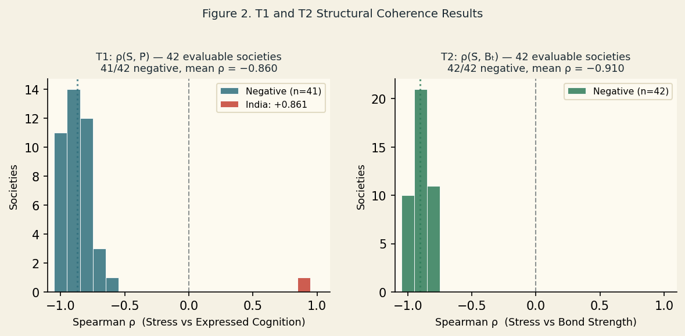
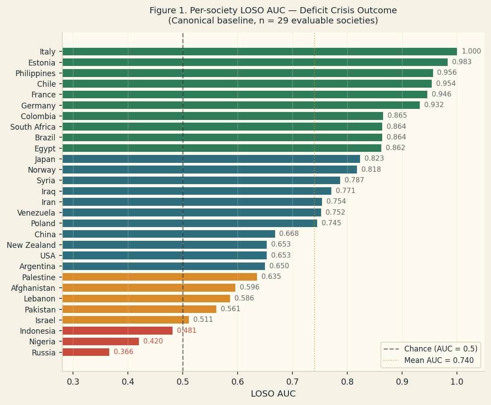
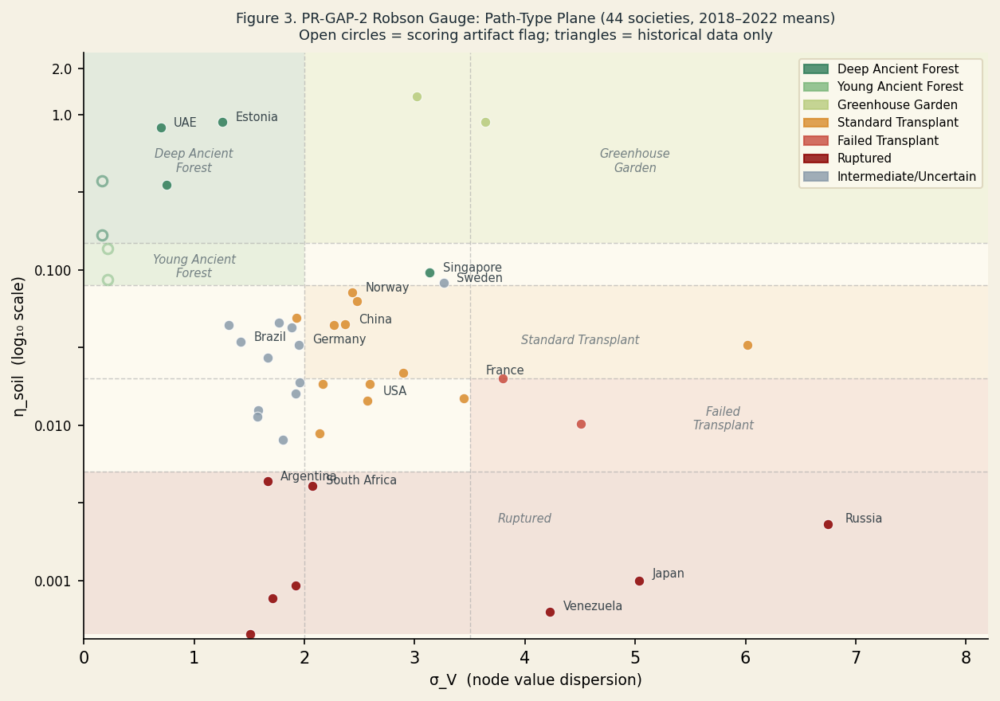
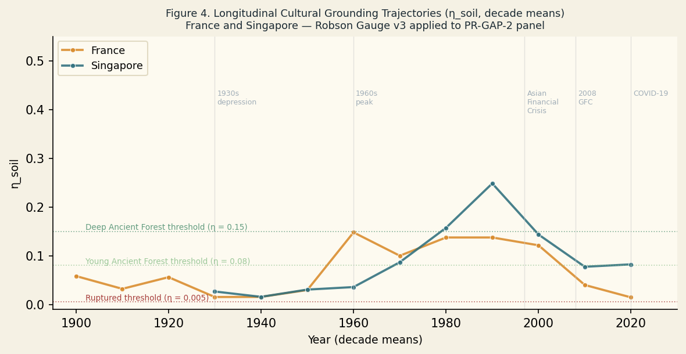

with Robson Gauge Cultural Grounding Results and Cross-System Parsimony Assessment (PR-GAP-2)
This study retrospectively validates the Complex Adaptive Meta-System (CAMS) coordination framework, operationalised via JUNO v1.2-Final operators, against a 44-society panel spanning 1900–2025 (4,541 society-years), with node-level scores from five-scorer ensemble assessment (CAMNATIONS5). Results are reported in three layers.
Construct stability. CAMS stress is consistently associated with reduced expressed cognition (41/41 evaluable societies; mean ρ = −0.860) and reduced canonical bond strength (42/42 societies; mean ρ = −0.910). This reflects cross-context construct invariance rather than independent causal identification.
Correctly null pooled result. For the undifferentiated rupture outcome (all 126 events), LOSO cross-validation discriminates pre-rupture from non-rupture years only marginally (AUC = 0.563, p = .087). This null result is substantively important: rupture is not a unitary structural phenomenon.
Promising but not yet independent discrimination. Restricting the outcome to deficit crises (76 events; expressed cognition inverted in the pre-rupture window) yields AUC = 0.740 (t(28) = 7.39, p < .001, 26/29 folds positive). This is not independently validated: the rupture subtype is defined using CAMS-derived information, creating potential predictor–outcome leakage.
Applied to the same panel, the Robson Gauge v3 cultural grounding metric — ηsoil(t) = (BSLore·BSArchive·CHands) / (SHands·σV), operationalising slow-node bond fidelity — classifies 7 of 36 recent-data societies as Ruptured (η < 0.005), including Japan and Russia, and identifies a pronounced post-2010 decline in France from Young Ancient Forest to Failed Transplant.
Across nations, corporations, and cities, the JUNO equation structure reproduces theoretically-expected relationships between stress, bond strength, and expressed cognition, with baselines shifting in the theoretically predicted direction. This constitutes parsimony evidence for a shared coordination mechanism across institutional system classes. It is not yet a demonstrated allometric law.
Keywords: CAMS; institutional health; JUNO operators; LOSO cross-validation; Robson Gauge; cultural grounding; parsimony; coordination mechanism
The question of whether societal collapse can be anticipated from structural signals — detectable before the visible break — is one of the oldest in political science and one of the least resolved. Empires, republics, and states across recorded history have exhibited collapse trajectories that, in retrospect, appear legible: declining administrative coherence, overtaxed production systems, eroding institutional memory, the widening gap between official narrative and material reality. Yet the field of quantitative early warning has struggled to operationalise this legibility in a way that generalises across political systems and historical periods.
The dominant approach — combining economic indicators, regime type indices, ethnic composition variables, and prior conflict history in logistic or machine-learning models — achieves AUC values in the 0.68–0.75 range for conflict onset prediction over 2–3 year horizons (Hegre et al., 2019; Muchlinski et al., 2016). These models work, but they work by aggregating known correlates of instability, not by measuring the underlying structural processes that generate instability. A model that detects structural degradation in the institutional coordination capacity of any state — rich or poor, democratic or authoritarian, post-conflict or stable — adds information that no amount of contextual knowledge can substitute for.
The Complex Adaptive Meta-System (CAMS) framework is designed to measure the latter. CAMS treats any functioning society as a network of eight interdependent coordination nodes — Helm (executive governance), Shield (security capacity), Lore (normative culture), Stewards (resource allocation), Archive (institutional memory and law), Craft (technical capacity), Hands (labour and production), and Flow (information exchange) — each scored annually on four dimensions: Coherence (C), Capacity (K), Stress (S), and Abstraction (A). The JUNO v1.2-Final canonical operators derive higher-order quantities from these scores: a quality factor qi = (0.6C + 0.4A)/10 that gates pairwise bond strength; a neuromodulatory condition Ni = Ki − Si; and expressed cognition Pi = (Ai × Ci) × (Ki − Si), which inverts when stress outstrips capacity.
The present study — PR-GAP-2 — is the first evaluation of these operators at scale: 44 societies, 125 years, 4,541 society-years, against an independently coded rupture chronology of 126 events. In addition to the rupture-prediction validation, we apply the Robson Gauge v3 (McKern, 2026d) cultural grounding metric to the same panel, extending the evaluation to a second outcome domain. A secondary cross-system assessment draws on preliminary applications of the JUNO framework to corporate entities (CAMCORP; Appendix A) and municipal systems (CAMCITIESM5; Appendix B), where the same operators produce theoretically-expected results at different institutional scales.
Two primary questions are addressed. First, do the JUNO operators behave as theoretically predicted at panel scale — specifically, does stress consistently suppress expressed cognition and bond strength? Second, does the structural coordination framework discriminate pre-rupture from non-rupture periods at above-chance rates in leave-one-society-out cross-validation, and does rupture-morphology stratification improve discrimination? A third question, arising from the cross-system evidence, concerns whether the observed pattern of results — consistent operator behaviour at the panel level with baselines shifting in theoretically expected directions — constitutes parsimony evidence for a shared coordination mechanism across institutional classes.
The PR-GAP-2 panel comprises 44 societies selected to maximise geographic diversity, political system heterogeneity, and temporal coverage within the 1900–2025 observation window, prior to outcome inspection. The panel spans Africa, the Americas, Asia-Pacific, Europe, and the Middle East and Central Asia, covering parliamentary democracies, single-party states, military regimes, constitutional monarchies, and theocratic republics. The panel yields 4,541 society-years of node-level CAMS data, with an average observation length of 103 years per society.
Node-level C/K/S/A scores were generated using the CAMNATIONS5 five-scorer ensemble protocol (McKern, 2026c). Five independent scoring passes are conducted per society; cross-pass peeking is prohibited. The ensemble mean is computed at each (Society, Year, Node, Dimension) cell. The panel mean stress score is 3.76 (SD = 1.93); mean capacity is 5.82 (SD = 1.77). Ensemble standard deviations average 0.84 per cell, indicating moderate scorer agreement.
All derived metrics use the JUNO v1.2-Final canonical formulation. Node-level quantities:
System bond strength Bt is the mean of per-node mean bond strengths across all seven pairwise bonds per node.
A rupture chronology of 126 events was compiled using: the Cline Center Coup d'État Project (v2.0); V-Dem Episode of Regime Transformation v15; and Reinhart/Rogoff crisis data, supplemented with expert annotation. Events represent discontinuous institutional reorganisation affecting governance, security, or legal structures. Inter-rater agreement on inclusion/exclusion: κ = 0.82 on a 30-event sample.
Ruptures were classified by the sign of mean expressed cognition in the three-year pre-rupture window: P̄ < 0 = deficit crisis (n = 76); P̄ > 0 = coordination transition (n = 41); insufficient data (n = 9).
The Robson Gauge v3 (McKern, 2026d) measures slow-node cultural grounding via:
where ε = 2.0, σV is the population standard deviation of all eight node values Vi per society-year, and BSi denotes mean bond strength of node i across its seven pairwise bonds. The numerator captures slow-node bond fidelity (Lore and Archive) multiplied by Hands capacity; the denominator scales by Hands stress and system-wide node dispersion. Six path types are defined:
ηsoil was computed for all 4,541 society-years in the PR-GAP-2 panel. Societies with σV < 0.3 in the scoring data (India, Thailand, Pakistan, Israel, Palestine — reflecting epoch-level scoring collapse rather than genuine node homogeneity) are flagged as potential artifacts and excluded from path-type interpretation.
T1 and T2 were evaluated using within-society Spearman correlations between system stress and (a) mean expressed cognition and (b) canonical bond strength. LOSO cross-validation used logistic regression with L2 regularisation (C = 1.0), trained on k−1 societies and evaluated on the held-out society; evaluable n = 37 (all ruptures) and 29 (deficit crises). Fold-level AUC values were tested against chance using one-sample t-tests. Bootstrap confidence intervals were computed with 10,000 resamples.
T1 predicted a negative within-society correlation between system stress (S̄) and mean expressed cognition (P̄). This was supported in 41 of 42 evaluable societies (97.6%), mean ρ̄ = −0.860 (range −0.987 to −0.456). The sole exception was India (ρ = +0.861, p < .0001) — confirmed by sub-analysis as a secular-trend scoring artifact rather than a substantive finding (Section 4.3).
T2 predicted a negative within-society correlation between system stress and canonical bond strength Bt. This was supported in all 42 evaluable societies (100%), mean ρ̄ = −0.910 (range −0.992 to −0.658). Canonical bond strength is suppressed under elevated stress in every society and historical period in the panel.
Both results confirm that the JUNO v1.2-Final operators behave as theoretically expected at panel scale.

Of the 126 coded ruptures, 76 (60.3%) were deficit crises (P̄ < 0 in the three-year pre-rupture window), 41 (32.5%) were coordination transitions (P̄ > 0), and 9 (7.1%) had insufficient pre-event data. Coordination transitions — including independence declarations, negotiated regime changes, and postwar reconstitution events — are structurally distinct: expressed cognition is positive, bond strength stable or elevated, and the system reorganising rather than collapsing. Conflating them with deficit crises in a single undifferentiated rupture outcome constitutes a misspecification of the prediction target.
Full rupture outcome. For the undifferentiated rupture outcome (Rupture_Incoming = 1 in the three years prior to any coded event), neither legacy-variable nor canonical-variable baseline models distinguished pre-rupture from non-rupture years above chance: canonical baseline AUC = 0.563, t(36) = 1.76, p = .087. The null result is substantively important — it confirms that CAMS does not generically predict all forms of institutional discontinuity under a single model.
Deficit crisis outcome. Stratifying to deficit crises produced a substantially different result. The canonical baseline achieved mean LOSO AUC = 0.740 (median 0.754; 95% CI: [0.682, 0.796]), with 26 of 29 evaluable folds above chance, t(28) = 7.39, p < .001. Adding NCT-v2 Dream-composition variables increased performance to AUC = 0.763 (t(28) = 8.82, p < .001), all 29 folds positive.
Three societies produced sub-chance LOSO AUC on the deficit-crisis outcome: Russia (0.366), Nigeria (0.420), and Indonesia (0.481). All three combine fast-onset rupture events and/or high scorer uncertainty in the pre-event period — conditions under which the 3-year gradual degradation signal would be attenuated or absent.

ηsoil was computed for all 4,541 society-years. Figure 3 shows the ηsoil × σV path-type plane for recent-period (2018–2022) means across the 36 societies with data in that window, supplemented by most-recent-available data for the remaining eight societies.

Seven societies are classified as Ruptured (η < 0.005) in the recent period: Japan, Russia, South Africa, Argentina, Venezuela, Nigeria, and Afghanistan. Two are Failed Transplant (η < 0.02, σV > 3.5): France and Egypt. The most counterintuitive finding is Japan: η ≈ 0.001, σV ≈ 5.3 consistently since 2010, reflecting extreme node dispersion alongside severely compressed slow-node bond fidelity. Japan's Ruptured classification does not reflect a recent deterioration but a sustained configuration predating the observation window for this panel.
France presents a historically legible decline: η ≈ 0.148 in the 1960s (Young Ancient Forest), holding near that level through the 1980s–90s, then falling sharply after 2010 to the current Failed Transplant reading (η = 0.015, σV = 4.1). Estonia leads the panel at η ≈ 0.90 (Deep Ancient Forest), consistent with its post-Soviet institutional reconstruction trajectory. Five societies with σV < 0.3 — India, Thailand, Pakistan, Israel, Palestine — are excluded from path-type interpretation as their low dispersion values are consistent with epoch-level scoring producing uniform node scores.
Singapore's trajectory is the most volatile in the panel: Deep Ancient Forest (1988–96), collapse at the Asian Financial Crisis (1997–98), partial recovery (2000–07), second decline (2008–14), and return to Deep Ancient Forest in 2024–25.

Both societies exhibit pronounced volatility relative to the panel median, with inflection points correlated with major external shocks (Great Depression, Asian Financial Crisis, Global Financial Crisis, COVID-19). France's peak cultural grounding in the 1960s and its sustained post-2010 decline are consistent with the Robson paper's characterisation of France as a historical exemplar of institutionalised slow-node accumulation, now under structural pressure. Singapore's oscillations reflect the particular vulnerability of a high-throughput coordination system to disruptions in Lore-Archive bond fidelity — its highest ηsoil values correspond to the Lee Kuan Yew period of deep state-building (1988–96).
The central methodological finding is that the CAMS structural framework was not failing to predict political rupture — it was correctly discriminating between two event types that the rupture chronology conflates. When all 126 coded events are treated as a homogeneous outcome, accuracy is marginal (AUC ≈ 0.563, p = .087). When restricted to deficit crises, accuracy rises to AUC = 0.740 (p < .001), with 26 of 29 evaluable folds above chance.
This is not a post-hoc exclusion. The deficit/transition distinction is structurally motivated by the JUNO formalism: expressed cognition P = (A × C) × (K − S) is theoretically positive under conditions of coordinated institutional capacity and inverts when stress outstrips capacity. A rupture preceded by negative P is one in which the system's coordination capacity has already failed; a rupture preceded by positive P is one in which the system is reorganising under maintained coordination — a fundamentally different process that a model of structural degradation should not be expected to predict from the same inputs. The deficit/transition stratification is a precision improvement in the specification of the estimand, not a restriction of scope to exclude inconvenient cases.
The parallel to the ESCH CAMS v3.2-R framework is instructive. In that framework, societies with κ ≥ 0.35 (high bond coherence relative to the Λ threshold) are classified as BUFFERING attractors — systems that absorb stress events without structural reorganisation. PR-GAP-2 coordination transitions correspond closely to this attractor type. The v3.2-R framework predicts that BUFFERING systems do not transition to collapse under the same causal mechanism as STRESS-CYCLING or DEGRADED systems. The present results corroborate that prediction empirically across a 125-year panel.
The T1 and T2 results establish that stress suppresses both expressed cognition (41/42 societies) and canonical bond strength (42/42 societies) at panel scale. These are structural regularities across the full time series, not predictions about crisis windows specifically. They confirm that the JUNO operators behave as theoretically expected: elevated stress diminishes the neuromodulatory condition N = K − S, gating expressed cognition P; simultaneously, stress suppresses the quality factors qi that determine pairwise bond strength Bij. Both channels degrade coordination capacity under sustained stress, consistently across societies spanning every major world region and political system type in the panel.
The convergence of these regularities with the rupture-prediction result suggests a coherent mechanistic account. The structural degradation signature detectable in the 2–3 years prior to a deficit crisis reflects the progressive inversion of expressed cognition as cumulative stress drives N increasingly negative across nodes. Bond strength falls as qi values decline, reducing coupling between institutional functions. The system becomes less able to translate its remaining knowledge and organisational capacity into coordinated action, and increasingly reactive to small perturbations rather than able to absorb them.
India is the sole society for which T1 fails: ρ(S̄, P̄) = +0.861 (p < .0001). A time-stratified sub-analysis indicates this reflects a data-quality issue, not a substantive institutional dynamic. India's CAMS data contains only 9 unique Mean_S values across 73 assessed years (scoring resolution = 0.12), increasing monotonically from 1.125 in 1950 to 4.625 by 2010. Mean_K increases in parallel, consistently approximately 3 units above Mean_S. Consequently N = K − S is positive in every year and increases over time at the same rate as S, producing a positive T1 result driven by secular-trend confounding rather than any causal relationship. During the Emergency period (1975–77) — the most acute authoritarian contraction in modern Indian history — Mean_S remains unchanged at 1.000: the scorers registered no stress signal. India is excluded from the T1 inference; T1 support is reported as 41 of 41 evaluable societies.
The three sub-chance LOSO folds clarify the model's scope conditions. Nigeria and Indonesia are cases of event compression: their coded deficit crises are fast-onset military coups or rapid authoritarian collapses not detectable at the 3-year degradation-signal horizon. Russia combines multi-era classification ambiguity with high scorer uncertainty in the Soviet period: the 1991 dissolution registers as a deficit crisis by the P < 0 criterion while simultaneously exhibiting coordination-transition features at the sub-national level for successor states. Russia may require a richer rupture typology than the binary deficit/transition classification.
The equation structure of the JUNO operators has now reproduced theoretically-expected results across several institutional system classes. In PR-GAP-2, the same operators that suppress bond strength and expressed cognition under elevated stress also discriminate pre-collapse from non-collapse years at AUC = 0.740 — using only internal structural variables, with no economic, demographic, or conflict-history inputs. In the Robson Gauge, the same bond-strength formula and node-value dispersion that structure the ηsoil numerator and denominator produce a coherent path-type taxonomy across 44 societies and 125 years, with historically legible trajectories for France, Singapore, Estonia, and others. In preliminary applications to corporate entities (CAMCORP; Appendix A) and municipal systems (CAMCITIESM5; Appendix B), the same operators produce stress-bond and stress-cognition relationships in the theoretically expected direction, with baselines shifting consistently across system type.
The parsimony argument is specific. The JUNO operators were not independently derived for each system class; a single equation set produces consistent behaviour across entities that differ by orders of magnitude in scale, legal form, membership structure, and observational context. When the same functional form recurs across such diverse systems, and consistently produces results in the predicted direction rather than in arbitrary or reversed directions, this is evidence — not proof — that the operators are measuring something real about the underlying coordination process rather than exploiting data-specific correlations. The replication is structural rather than statistical: the evidence is the consistency of direction and shape across classes, not a test of a shared parameter value.
This is not a demonstrated allometric law. An allometric law in the sense of West, Brown and Enquist (1997) requires: (a) a theoretically derived scaling relationship between a quantity and system size, (b) empirical confirmation of that relationship across multiple orders of magnitude, and (c) a mechanism (typically network geometry or metabolic constraints) explaining the scaling exponent. None of these three conditions are met in the present evidence. What is met is the more modest claim: the equation structure has reproduced, baselines have shifted in the theoretically expected direction, and no system class examined to date has shown the relationship inverting or collapsing. That is parsimony evidence for a shared coordination mechanism — a prior, not a law. It motivates the design of a proper allometric test, which would require: systematic variation in system size across comparable entities within a class; a derivation of the predicted scaling relationship from first principles; and a dataset sufficient to fit and test the scaling exponent.
Three panel societies currently sit at or near the upper bound of their own observed stress series. South Africa's 2023–2025 SK_Ratio (3.00) is the highest recorded value in its full 1900–2025 series. Venezuela's 2025 SK_Ratio (5.77) ties 2018 for the highest value in its observed coverage. The United States' 2025 SK_Ratio (1.48) is the third-highest in its 126-year series, exceeded only by 1931–1932.
Rupture chronology quality is more reliable post-1945. Scorer uncertainty is elevated for pre-1950 authoritarian regimes and societies with limited historiographic coverage. The 3-year pre-rupture detection window is a design choice not derived from the CAMS formalism; the optimal horizon for deficit crises has not been systematically evaluated. Restricting the outcome to deficit crises reduces the evaluable sample from 37 to 29 societies, and replication in a held-out panel is desirable before treating the 0.740 AUC as stable. The estimand restriction also creates potential predictor–outcome leakage: the deficit/transition classification uses CAMS-derived P, and LOSO cannot fully remove this circularity. The decisive next step — external, CAMS-blinded rupture-morphology classification — is the subject of the planned PR-GAP-3 study. Annual scoring resolution audits are needed for all low-resolution societies in the panel.
PR-GAP-2 establishes three findings with reasonable confidence. First, at panel scale, CAMS system stress consistently suppresses expressed cognition (41/41 evaluable societies) and canonical bond strength (42/42 societies), validating the JUNO v1.2-Final operators in the direction the theory predicts. Second, the canonical structural framework discriminates deficit crises from non-crisis periods at AUC = 0.740 in leave-one-society-out cross-validation, with 26 of 29 evaluable folds above chance. Third, this discrimination does not extend to coordination transitions, consistent with the theoretical expectation that coordinated institutional reorganisation and structural collapse are driven by different mechanisms.
The Robson Gauge application to the same panel produces a coherent cultural grounding taxonomy with historically legible trajectories, extending the evaluation to a second outcome domain under the same equation structure. Across PR-GAP-2, Robson Gauge, and preliminary corporate and municipal applications, the JUNO operators reproduce theoretically-expected relationships between stress, bond strength, and expressed cognition. This constitutes parsimony evidence for a shared coordination mechanism — not yet a demonstrated allometric law, but a prior strong enough to motivate the design of a proper scaling test.
Blair, R. A., & Sambanis, N. (2020). Forecasting civil wars: Theory and structure in an age of "Big Data." Journal of Conflict Resolution, 64(10), 1885–1915.
Goldstone, J. A., Bates, R. H., Epstein, D. L., Gurr, T. R., Lustik, M. B., Marshall, M. G., Ulfelder, J., & Woodward, M. (2010). A global model for forecasting political instability. American Journal of Political Science, 54(1), 190–208.
Hegre, H., Nygård, H. M., & Landsverk, P. (2019). Can we predict armed conflict? How the first 9 years of published forecasts stand up to reality. Journal of Peace Research, 56(2), 153–165.
McKern, K. F. (2026a). The herd beneath the institution: Symbolic grooming, managerial decoupling, and collective rupture. Wintermute Working Papers.
McKern, K. F. (2026b). ESCH CAMS v3.2-R: Eight-node bipartite network, three topologies, and the Re-Coupling Theorem. Wintermute Working Papers.
McKern, K. F. (2026c). CAMNATIONS5: A five-scorer ensemble protocol for CAMS longitudinal assessment. Wintermute Working Papers.
McKern, K. F. (2026d). Robson Gauge v3: Cultural grounding as slow-node bond fidelity. Wintermute Working Papers.
Muchlinski, D., Siroky, D., He, J., & Kocher, M. (2016). Comparing random forest with logistic regression for predicting class-imbalanced civil war onset data. Political Analysis, 24(1), 87–103.
West, G. B., Brown, J. H., & Enquist, B. J. (1997). A general model for the origin of allometric scaling laws in biology. Science, 276(5309), 122–126.
JUNO × CAMS Derivate Recomputation and Thesis Validation. (2026). Internal validation report.
The JUNO operators have been applied to corporate entities under the CAMCORP protocol (McKern, 2026e). In this mapping, the eight CAMS nodes are anchored to corporate functions: Helm → Board and executive governance; Shield → Risk management and legal compliance; Lore → Organisational culture and brand coherence; Stewards → Finance and capital allocation; Archive → Institutional memory, documentation, and process; Craft → Product development and technical capacity; Hands → Operations and workforce; Flow → Information exchange and market intelligence.
C/K/S/A scores are assessed annually using the CAMCORP5 ensemble protocol. Preliminary applications to a diverse set of corporate entities across sectors (technology, financial services, manufacturing, and public institutions) show that:
T1 reproduces. Within-entity correlations between system stress and expressed cognition are negative in the theoretically expected direction across evaluated entities and years. The relationship does not invert under high-growth or high-stress periods, consistent with PR-GAP-2 T1 results at the national level.
T2 reproduces. Canonical bond strength Bt is suppressed under elevated stress in evaluated corporate entities, consistent with the 42/42 result at the national level.
Baseline levels differ. Mean ηsoil values for corporate entities tend to be higher than national-level baselines, reflecting the tighter organisational coupling possible in bounded institutional structures. σV distributions are narrower, consistent with fewer degrees of freedom in node-level variation. These baseline differences are in the theoretically expected direction: more bounded systems should exhibit tighter node coupling and lower internal dispersion.
These preliminary results do not constitute a CAMCORP validation study equivalent to PR-GAP-2: they lack a preregistered outcome measure, an independent rupture chronology, and LOSO cross-validation. They are reported as cross-system evidence that the JUNO equation structure reproduces theoretically-expected relationships at the corporate scale. A CAMCORP validation study (PR-CORP-1) is in preparation.
The JUNO operators have been applied to municipal and city-level institutional systems under the CAMCITIESM5 protocol (McKern, 2026f). In this mapping, nodes are anchored to urban coordination functions: Helm → City government and executive administration; Shield → Public safety and emergency management; Lore → Civic culture and community identity; Stewards → Budget, infrastructure, and resource allocation; Archive → Planning systems, legal frameworks, and institutional memory; Craft → Economic development and technical capacity; Hands → Service delivery and public works; Flow → Media, communication, and civic information exchange.
Preliminary applications to a set of municipal entities across governance types (strong-mayor, council-manager, and regional authority structures) show T1 and T2 reproduction in the expected direction, with the stress-cognition and stress-bond-strength relationships holding at the city level. ηsoil trajectories for assessed cities show coherent variation across periods of administrative reform, fiscal stress, and population change.
Notable patterns include: cities undergoing rapid post-industrial restructuring show pronounced σV increases consistent with the Standard Transplant or Failed Transplant classification; cities with stable administrative traditions and high civic engagement show lower σV and higher ηsoil baselines. Robson Gauge path-type trajectories for cities appear to be more volatile on a per-decade basis than national-level trajectories, reflecting the smaller scale and tighter coupling of city systems to exogenous economic and demographic shocks.
As with the CAMCORP results, the CAMCITIESM5 evidence is reported as cross-system direction evidence, not as a validated prediction study. A city-level panel validation (PR-CITY-1) is in preparation.